Advanced Building Revue 07: Stations
Building stations is one of the most essential things in OpenTTD. To build a station doesn’t require any experience (besides knowing which button to press), although construction of a station that works perfectly requires some deeper and in under-rated amount of knowledge. The point of this article isn’t in showing all possibilities how to make a station, but it should note as many things as possible in terms of what to consider when building a station and also, talking about signalling styles which are sadly almost ignored. Here I present to you, ABR07: Stations. 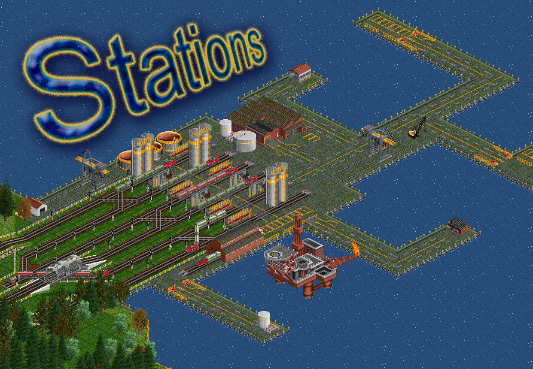

Introduction
As building stations is a very complex topic and there isn’t too evolved (or insufficiently for this article) vocabulary, I will define some key elements I see in stations, and attempt to name them appropriately. Some of them might be used already, some might not. I just want to make things clear 😉
Note: All examples are made for TL3.
Incoming Line
This is the very busiest line that is coming into the station. It is a line where could be a high density of trains basically. This rail should not ever slow down if we aim for max throughput. 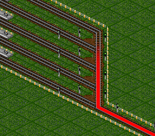 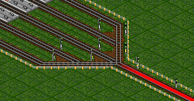


Buffered entrance
An entry into a station where trains are supposed to wait for a free platform in waiting spaces (buffing spaces), until a platforms is free. 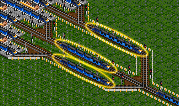

Direct entrance
An entry into a station where trains are supposed not to stop since split from Incoming Line, until reaching their platform. 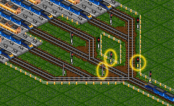

Platform Distribution
The way how to get trains into the platforms. One of the largest concerns when constructing a station entrance.
Balanced entrance
Usually a station entry where trains from every incoming line are able to join any platform. 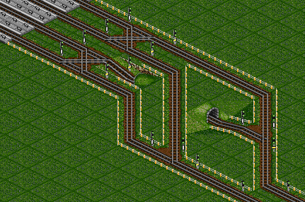

Balanced exit
An exit where trains are able to choose any outgoing line they want, or at least – providing enough choices as needed. 🙂 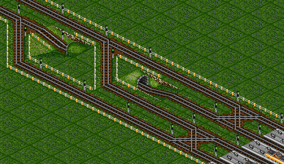

Full-speed station
Also referred to as full-throughput. Simply put, this is a station that will be able to accept fully loaded lines (reasonably full, packed, or whatever – depends on situation) without slowing them down.
Synced Station
This means that any path through any platform is the same length. In practice it means that trains come out of the station in the same formation as they came in. Just like bridges. 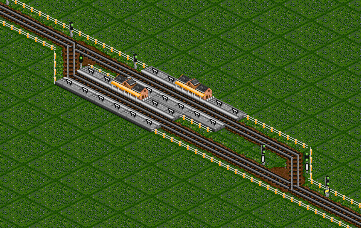

Entry Check
The entry signal in front of the station that allows trains to get inside only if there is space for them. Especially viable with pickup stations where it is possible that they could get completely full. 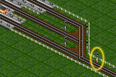

Braking Space
A space needed for trains to brake in front of a platform. A full TL braking space is an ideal case, but any other braking space can be useful too, and many times a full braking space isn’t required. 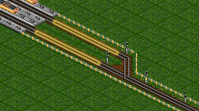

Blocking
For this article, it means an act when a train stops where it shouldn’t. Mostly caused by two trains attempting to get into the same signal block. After a given time (usually short), the blocked train is able to move again without any player interference. 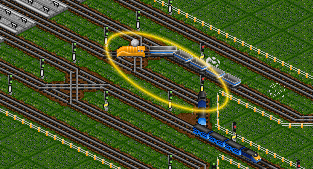

The Stations
Different stations have different requirements, needs and are expected to perform differently but I will try to describe some things that apply to all standard station types, occasionally explaining when, where and for which stations it applies more or less. As this is the main part of this article and it is fairly long, I will sort things into numbered paragraphs.
1. Platform Count
What is usually the first question someone asks before building a station? 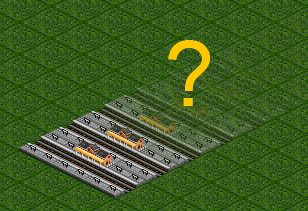
“How many platforms per line?”
Please note that this sentence makes no sense until you provide all important information on which the platform count actually depends! Basically every station design requires different platform counts. This is caused by different times of trains getting into platforms – faster response, less platforms needed. Balancing station entrance (in appropriate times) should mean that you need less platforms too. How far balanced, how fast the station is, should be up to builder. That way, you can’t really tell him, how many platforms he will need.

Note: I don’t even mention influence of trains – speed, unloading times, acceleration etc. just because it raises/lowers the platform count requirements, possibly by ridiculous amounts. But always consider what trains you are using! If you don’t know the train set, I strongly recommend to test trains (and with the same settings, such as TL, loaded trains, etc.) because you can be really surprised sometimes.
2. Balancing traffic
Some stations may be better built with some balancing involved. Too often people think that balancing a station is a must in all cases, although this is very far from truth.
2.1. Balancing the entrance
Let’s point out what does balancing actually do and why… When we balance entrance tracks, we expect that those lines aren’t going to be fully loaded and that way they need lower average amount of platforms per line. This applies especially if we have for example a factory, with 3 incoming lines. Some of those trains are goods, some are raws. When the goods trains split out, the drop receives only raw trains, therefore the lines can’t be totally full. This is for example a case when it would be really good to balance the station entrance. 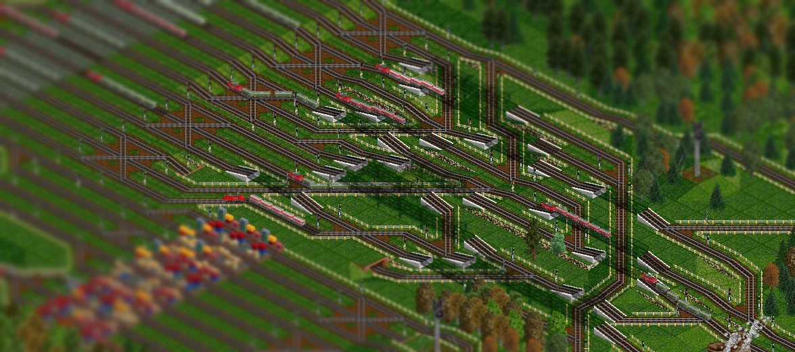
On the other hand if we had separate lines for goods and raws, we could pack them as high as we can and then it wouldn’t be so effective to balance tracks.
Balanced entrances are quite essential for pickups, where it is likely that trains wait in the platforms and to ensure they don’t block just one line, we make it balanced. This also kind of applies to balanced entrances for drops. If there is any jam or problem, trains just re-balance to the free platforms, possibly making unjamming easier.
Note: There is one considerable advantage for unbalanced stations: easy expandability by just cloning them.

(The most awesome and probably hardest style how to build a balanced station entry. Do not copy unless you really know what is going on. PSG 190, Oil Drop)
2.2. Balancing the exit
Despite all of the common thoughts, this is quite a lot different from entrance balancing. We don’t really need to make trains be able to join every line, we neither need to make trains able to choose any. The only thing we actually want is just to let trains leave the station. By any means.
The word balancing in this case means that trains have a choice, which line they will take.
Mostly when you hear balancing you imagine that every line has equal amount of traffic. This is actually totally different from the actual result. When you balance the exit, you usually make trains able to join here and there, using priorities to check if there is space or not. That way it usually ends up like they fill one line first then move onto another. The true balance in terms of equal traffic could be reached when all of the exiting lines are full.¨
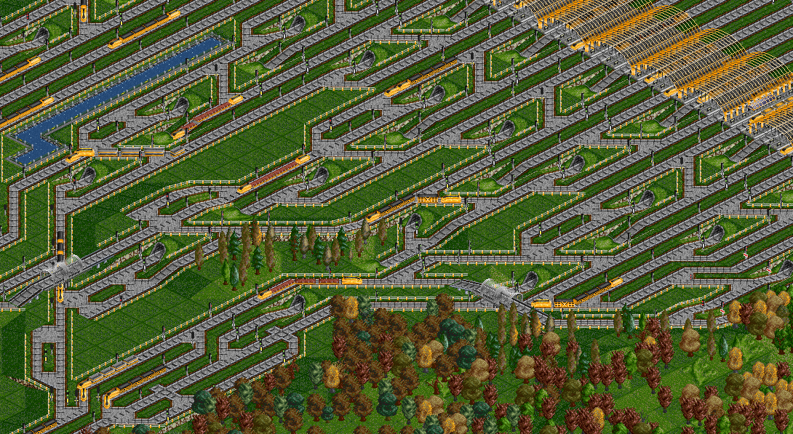
(The old, style of a balanced station exit, PZG05, Factory Drop)

With balancing, it is some kind of solid stable method how to make an exit. Although in most cases I think it is way enough to make it just like “every Xth platform joins one of the X lines”. But this requires to be quite careful and consider how does the station entry/platform split actually work. If some platforms are more likely to be used due to penalizing or any other reason, you have to consider it when making a forced “balancing” exit. 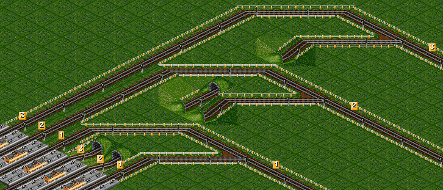

3. Station Shape
There is like a million ways how to compose the station, although not all of them are anyhow changing how the station actually works. Using the “right” shape of the station to fit landscape or other needs is and always will be an important task for us station builders, and at the same time – about half the fun in station building. There is often one problem with station shape – many people look only at it, not at how it actually works. Station shape usually determines how compact is the station going to be.
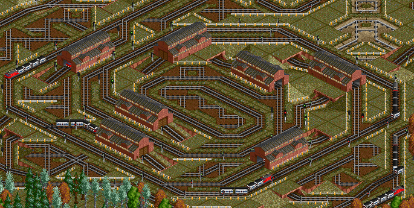
(Transfer 06 aka MAZE from PSG 175, showing that almost anything is possible.)

3.1. Ro-ro station
A station where incoming trains don’t block the leaving trains. Roll in – roll out stations are considered standard since they don’t really have any disadvantages.
3.2. Terminus Station
What is usually an over-rated difference between station shapes, is a terminus station design. The only real difference is that you use the same side for both entrance and exit. That means quite a few disadvantages as you usually have to rebuild both of them in case something breaks, it also is worse (barely possible if you want to keep it reasonably good) for balancing platforms since you have less space there since there is everything in one spot.
Rather more of a wrong thought is that terminus stations are worse in general in compare with a roro. That is far from truth because first of all, station throughput can be virtually endless, provided you just make them large enough.
Note: terminus stations tend to have worse platform usage, but if built properly, they are as effective as a roro in total station throughput
3.2.1. The X 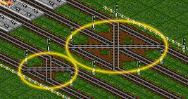
The one place of most problems is the “X” in front of the platforms. At the same time, it is quite dependent on circumstances whether terminus is good or not. Of course, what else would it rely on than trains. Here plays a big role unloading time, speed and acceleration for a bit.
When we use for example the original train set TL3 2xLev3, we have insane speed, super acceleration and endless unloading times. This means that though this “X” comes only like 2 trains per 2x unloading time + time to get there (small, since trains are fast). In the end we get that the “X” has far better throughput than the two platforms behind it, that way, it doesn’t matter if the station is terminus or not.
Another note about the X applies to usage of the stupid PBS vs. the pre-signals. It again all depends how fast is the X required. Most of the time the requirements are fulfilled by the seemingly slower pre-signals, therefore PBS doesn’t have to be better.

3.2.2. X-less terminus 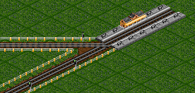
Another quite powerful trend how to do a terminus station is to eliminate the X. The result is that trains in the past X are now not meeting. This means that platforms can be used as frequently as of a ro-ro station. Another advantage is that you can make a synced terminus this way if you adjust the lengths correctly and make a direct entrance.

3.3. Shaping Your Station
With shape there usually come different possibilities in terms of signalling, or how the station is going to work. There is quite no guide to how to do the right station shape because you just have to think about both – how will the station work, and how will it fit there ;).
4. Station Purpose
I can’t stress it enough how important it is to know what the station is going to do, what is going to be the use, how will it work. It happens too often that a station is copied from someone else without regarding the circumstances, ending up as working not very well despite the original station worked brilliantly.
The first and probably most important aspect is whether the station is a pickup, a drop, or even both.
4.1. Pickup stations
The simplest way how to indicate what we need is to ask ourselves – for example “Is it possible that the station could get full” Answer: Of course! It is a pickup, all it takes is one wave of trains and it is full! And that means that we need to use something that doesn’t let trains in if the station is full.
Or another often problematic thought process: Balance the entrance or not? Answer: Balanced entrance for multi-incoming-line pickups is a must in order to make trains able to use any platform, shall it come from anywhere. Otherwise trains might easily fill all platforms on one half, and the other would be left empty.
There are of course more aspects to consider, but these two are the most important.
4.2. Drop stations
The unloading stations can often be made much dirtier since you “just need to drop stuff”.
In compare with pickups we don’t need any control for letting trains in if station is full – because if it is designed for full throughput, then it should never get full! (only in case of jams and when we build for having jams, something is already wrong)
Balancing the entrance isn’t that necessary either! It is helpful in most cases, of course, but we can really have an effective station without balancing the traffic. (PZG13 for example)
4.3. Other stations
The most unique stations are usually having something else – like SRNW stations or stations with refitting depots involved. As another special type I would say pax stations because they usually stay for some extra-long time since they mostly both load and unload. The point is, after all, that we can declare almost every station special or unique, that way copying a station is almost never the right way to go! Note that it usually is better (and more educational) to build your own station, with all the considerations what you need or not, than copying something that doesn’t really fit the situation so well.
5. Letting trains in when platforms are full
This is an important aspect that isn’t thought about much. Drop stations with platform count high enough shouldn’t need to be stopped in the entrance because they should always find a platform free. In terms of pickup stations, there usually are pre-signals to make sure trains don’t enter the station when they shouldn’t. This has an exception with overflows, where the train has to enter the station at any time – and possibly ending up in the depot, if it fails to join a platform.
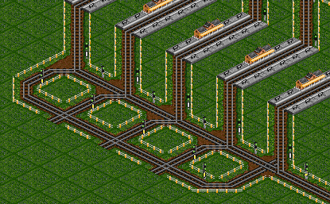
A signaling technique greatly related to this is the Pre-signal Bypass, often looked at as being something awesome. In fact, it doesn’t do all that much wonders, since if it is long enough to accommodate trains inside, it blocks. For drop stations, we should be able to eliminate the first entry signal, and for drops we could either easily use a different design, make some kind of overflow (not necessarily depot!) or just hope we don’t jam :P.

6. Platform Distribution
All stations consisting of more than one platform need to split the incoming trains into their platforms, possibly to use the platforms as effectively as possible, or just “so that it is enough”.
There are two main ways how can trains go. Firstly – wait at waiting bays in front of stations until they reach the station. Secondly – making them not stop until they reach the station.
6.1. Buffering Entrance
Building spaces for trains to let them wait in places you want them to wait should be the most essential thing when building a station. (unless you want no waiting trains in front of a station). Making waiting bays usually applies to stations with balanced entrance and trains with good acceleration. The direct connection is much easier to maintain when the stations aren’t balanced so that multiple trains can’t collide.
6.2. Direct Connection
Trains don’t have to stop when on the way towards their platform just if we use for example combo signals. This works only for situations (not balanced stations) where the train can’t be disrupted by some other train getting into it’s path and therefore one of them would have to stop. Although for multi-line balanced stations where trains could meet each other in nasty places, we would need to get trains away from the nasty places somehow. Such an anti-blockage mechanism is the fail-safe unblocker.
6.2.1. Fail-safe unblocker 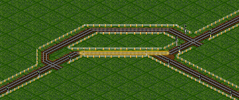
This method has been used already a few times on the public server. The purpose is to make trains not stop until they reach the platforms, and if they are forced to stop, then make them stop in safe locations, not blocking or slowing the main line. Works the same as fail-safe joiner.
The whole thing works based on the fact that a train comes to a certain signal, which gets green just when the train is in front of it (marked position) because we know how long the train is, that way we can place an unblocker exit right to the closest free signal block available. On the other hand when the train passes just by, it isn’t green when it shouldn’t because of that unblocker signal, since the train is still blocking it.
The usage is in any position where it is possible that two trains could meet. Mainly when making a non-stop terminus station (leaving train could meet the entering), or when there are more than one incoming lines.
Note: The fail-safe mechanism is NOT supposed to prevent trains from stopping completely! It is made so that trains don’t block the input line.

6.3. Additions to platform distribution
Sometimes you need to make some line less effective than it actually is. This is mainly when you have splits into the station, to make trains choose “better”, but it also applies to the very main ways how to make station entrances. 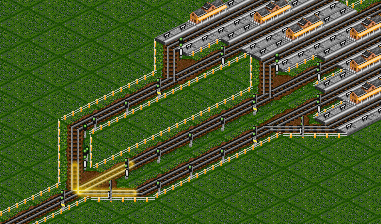
6.3.1. Signal gap – throughput cap
Just by making a longer signal gap, you can cap the maximum throughput of that piece. That way, this part requires less platforms and so on.
6.3.2. Full-speed waiting bays
This requires only one thing – proper waiting bays. If you can make as tiny signal gaps behind pre-signals as possible, trains could go through one of the choices in their full stream. That way you don’t need to care about distribution among platforms since trains just skip somewhere else when one part is full and they can use that line with great throughput.
High-speed split. The highlights mark the signal gaps which are short enough to allow a “normally” full lane.

6.3.3. Logic Split 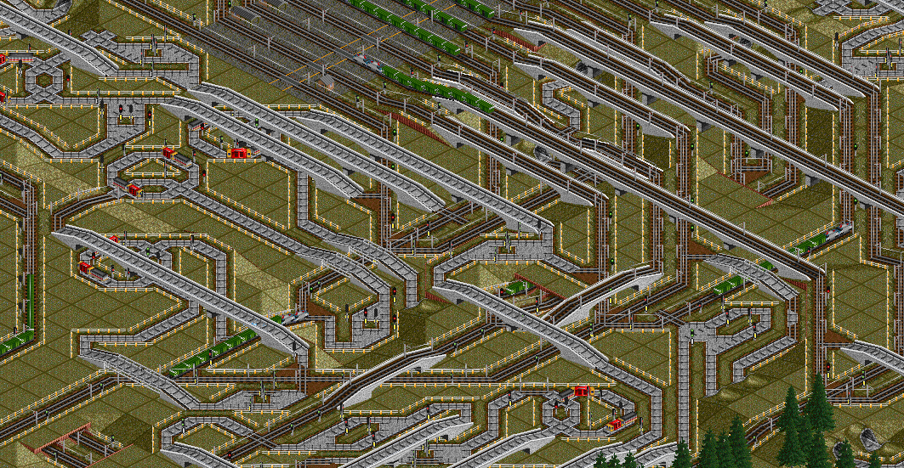 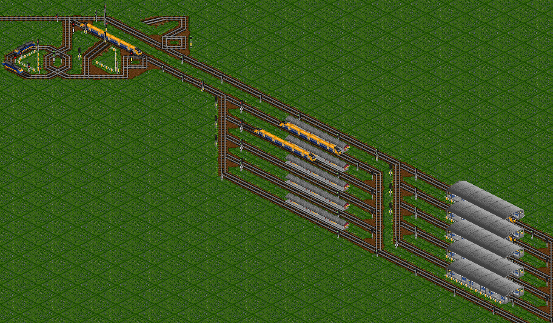 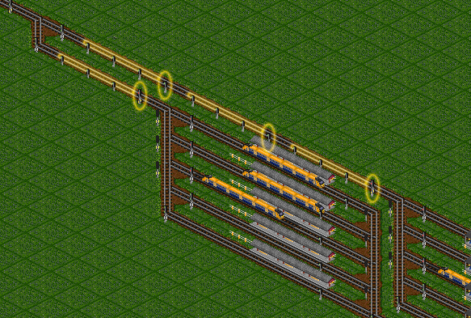
Sometimes we can use a logic splitter (like flipflop) to distribute trains into platforms properly. There are two cases I can remember in the last games. First one was PSG 189 – rubber/wood drop or PSG 179 Hypnotizer.
Both stations are of a very special kind. We can see that trains “don’t know” what is in the platforms or behind them – especially on the other half of the station where they are supposed to only “sometimes”. And as we later saw, perfect balancing skyrocketed the throughput to a different level. 🙂
The other one is building crap stations and splitting by logic “just because” just like in the image below (PSG192, Dundale)
This is rather a brain disaster than good way to build in terms of building a station if you keep in mind that the only thing that was actually needed was a proper station entrance, for example like the image below. Additionally, logic should be used when needed, not whenever possible. (signals in circles are one at which trains stop in case station gets full, lines show the 3 tiles where trains stop eventually)


7. Time and platform efficiency
Trains use platforms at some rate. This rate differs with each station design. Mostly it is based on how far is the “releaser signal” into the platforms since trains take longer or shorter path to get to the platform. Overall we want to have as high platform usage as possible so we can have lower amount of platforms, although we have to consider the following: 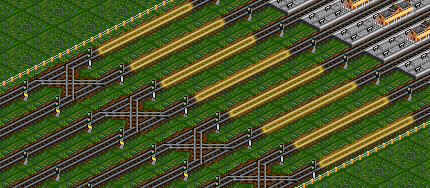
Train acceleration decides if we want to make waiting bays for example. When we have trains that just accelerate very slowly, waiting bays might slow them down too much! In such cases it might be better to make trains not stop until they reach their platforms. On the other hand if we have trains that are in full speed fast, we can make waiting bays with great efficiency because they don’t mind that much.
Another decisive thing is how long do our trains stay in the station. If they have fast loading times, we need the station to be able to feed trains faster to the platforms. This can be key in some situations, such as using the direct connecting without stopping trains on the way.
One of possible improvements (not always! – train acceleration is important) is making waiting bays right in front of the platforms. That way trains get into the platforms right after they get free. Just like in the image below.

8. Synced Station
Just like syncing bridges, this makes trains come out in the same formation as they came in. This means all platforms take equally long path to go into and out of in total. From the way how it works we can say that you have to use the direct entrance. Any balancing could break it since there would be a possibility that trains could meet, therefore one would have to stop. Another thing to consider is that we need to have all trains stay in the station (load/unload) for equally long time. (easiest to just send there trains of one cargo type) 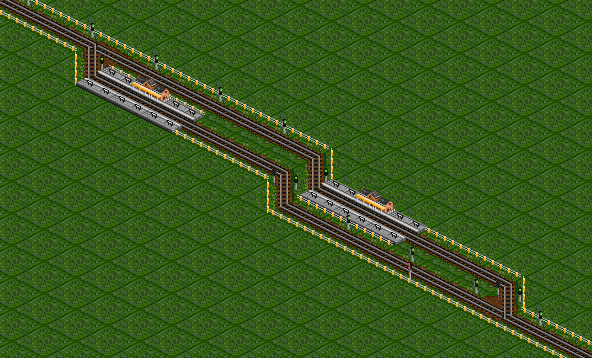
Naturally, having synced station is quite useful especially for fast and badly accelerating trains just because they don’t have to stop.
A perfect example of a synced station is probably nothing else than our drop in PZG13 – trains were fast and mainly – they were so packed that any stop in a wrong spot would mean jam. The station worked on the same pattern as the image below, but it was further doubled because of extreme train inflow.

9. Slowing down or jamming
Mainly talking about larger Main Stations, they must never slow down the input line. The first thought of an unexperienced player would be probably saying that we need a larger station because this one is too small. This can be true, but I will rather note things that aren’t considered all that often, other than “being large enough”.
9.1. Signal Gaps
Over all, a signal gap is an array of missing signals, possibly slowing trains down if the gap is too long for the required throughput. 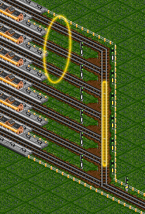
The most important gaps that often occur in stations are mainly pre-signal long arrays, reacting slowly, just like this one:

The longer this station is, the slower the pre-signals will be, thus making packed line throughput impossible. Theoretically, the only slow parts are the later platforms. That means if trains swap between slower and faster platforms, they don’t mind the signal gap. It can be reinforced by penalties, penalizing the faster tracks more, so trains use the gap anytime they can. (sometimes referred to as “valhallasw style”) A more reliable solution is making the gaps in the beginning of the entrance. For example – if you need to split one line into 6 platforms, you can first split in half, then each line goes to 3, just like the example below, making the first split gaps so long that the later ones don’t matter. 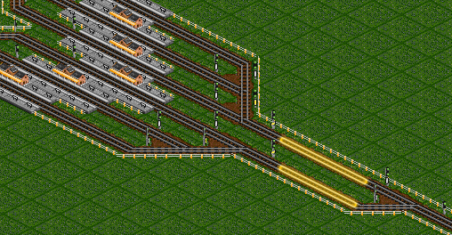

9.2. Braking Spaces
One of the things that are usually ignored, wrongly understood, or just explained differently. Some people just know that the train is going to stop in the station soon anyway so why would they make braking spaces? Please note that this has nothing to do with station design and throughput!!! The train does indeed stop in the station. But before slowing down, we need to make sure that it doesn’t slow down the rest of trains coming into the station. First rule should be that we need to keep trains at least one TL from the main line and platform.
We could say that braking space requirement depends on trains in terms of TL, acceleration, speed, and mainly – their purpose, usually set by their position. Train Length because we need how long the spaces should be. Greater acceleration usually makes trains come closer together, which also requires more proper construction quite often. And their speed in which they are coming is also important because the higher speed, the more proper braking spaces we need (just because there is a faster – and greater difference from full-speed and station-braking-speed).
How long the braking spaces should be depends on how far traffic is expected to be there. But not in terms of the whole station, but in terms of that exact line from which trains enter the platforms. 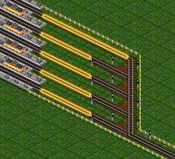
For example this station (image below) has trains joining platforms directly from the main line. This means that we require full braking spaces (1x TL).

Although if we split the station into two, we can see that the first array has longer braking spaces than the second one. This is because we need a full TL from the first entry signal towards the platform. But the other array is expected to have only ~half amount of trains and is far enough from the main split to actually slow down the line. 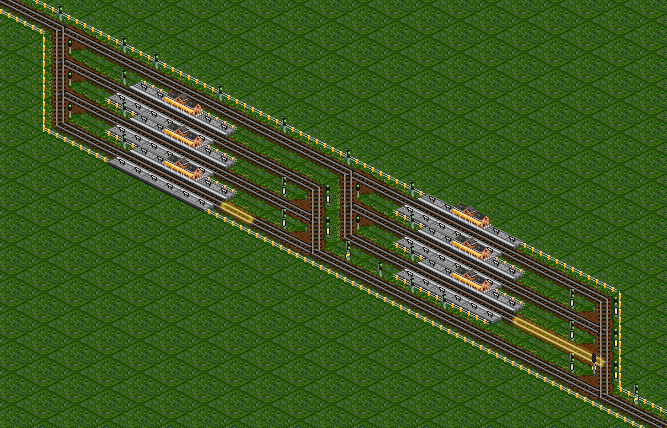

Braking spaces don’t always apply only to slowing down the line though! Some areas on the stations can tend to be under more stress and you might want these places to be as fast as possible. Braking spaces can (and should) also help there when needed. For example you want trains to be as fast as they can on the X. 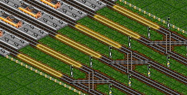

9.3. Blocking trains
When multiple trains enter multiple areas which lead to one signal block, only one of them can follow at a time. This means the trains block for a while and have to wait. Such behavior can be seen in stations lacking careful signalling or it is expected not to make so many trouble. Usually it occurs with stations where trains aren’t supposed to stop until reaching the platforms – getting stuck halfway through. Most of such cases are easily solved by proper waiting bays.
Note: when talking about self-blocking, it usually means totally stuck trains never getting from their stuck position – that is a generally serious flaw for any kind of construction so I will not talk about it here
Conclusion
This guide is basically something like finding the perfect station. By reading this part of article, you should already be aware of like endless possible flaws of some station, knowing the requirements, and might want to combine them all together. Please keep always in mind that as long as the station works, it is fine. These points I talked about are just many aspects that can make the station work or not, but they are no rules! Actually, knowing what you can make “less proper” is also very useful, because you might save some space with it. If someone builds a station not according to this guide and it works, please leave it alone ;).
Now what are you waiting for? Let’s go make some super insane station! 🙂
Categories: Community News, Gameplay, OpenTTD, ProZone, Public Server, Tutorial
Paltala September 28, 2010 18:29
I resent the comment about Dundale, PSG192 D: The idea of that was to get a perfectly even train split across all the platforms as that station served something like 200+ trains
V453000 September 29, 2010 17:34
which is exactly possible just by using brain and correct signalling 🙂
Paltala October 1, 2010 17:55
hey, using the double flip flops and compacting them was awesome though (you used an early version of the station D:)
Paltala October 1, 2010 17:56
I forgot, in the early stages we had an inconsistant train flow but still wanted perfect distribution, hence, flipflops =3
V453000 October 3, 2010 08:48
which is possible just by using brain and correct signalling 🙂
Paltala October 3, 2010 19:26
either way, saying it was crap is harsh considering how many trains were being pushed through just 20 platforms or so
V453000 October 5, 2010 11:58
why would I lie 🙂
Anonymouse April 14, 2017 23:57
Helps me a lot! thanks!